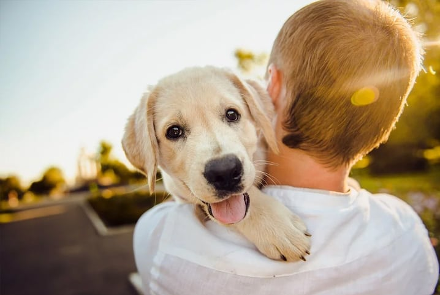

ABRIL LARANJAConscientização e combate à crueldade contra os animais |
|
|
Início Campanhas ONGs Leis Sobre |
O que é o Abril Laranja? O Abril Laranja é uma campanha internacional dedicada à prevenção da crueldade contra os animais. Essa iniciativa surgiu com o objetivo de chamar a atenção da sociedade para os diversos tipos de violência que muitos animais sofrem diariamente, como abandono, agressões físicas e falta de cuidados básicos. Durante o mês de abril, escolas, ONGs e outras instituições realizam diversas atividades educativas, como palestras, campanhas nas redes sociais e eventos de adoção. Essas ações ajudam a informar as pessoas e incentivar mudanças de comportamento. O movimento também busca reforçar a ideia de que os animais são seres vivos que sentem dor, medo e precisam de cuidado, carinho e respeito. Por isso, é fundamental que todos contribuam para a proteção deles. Por que esse tema é importante?A discussão sobre o respeito aos animais é essencial para a construção de uma sociedade mais ética. Quando aprendemos a respeitar os animais, também desenvolvemos valores como empatia, responsabilidade e cuidado com o próximo.
Responsabilidade humanaOs seres humanos têm um papel fundamental na proteção dos animais. Isso inclui oferecer alimentação adequada, cuidados com a saúde, abrigo seguro e muito carinho. Além disso, é importante não abandonar animais e sempre denunciar casos de maus-tratos. Cuidar dos animais é um dever de todos e pequenas atitudes podem fazer uma grande diferença. AlunosCarlos Eduardo Félix da Silva |
| Projeto Escolar - Abril Laranja | |